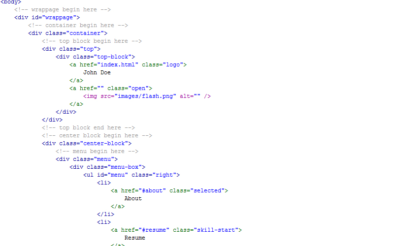

Created: 27/12/2011
By: NORDiX
Email: pavelyakov@gmail.com
Thank you for purchasing my theme. If you have any questions that are beyond the scope of this help file, please feel free to email via my user page contact form here. Thanks so much!
The basic page is index.html. It contains three basic blocks top , center , bottom:
There is full description and content of HTML-code in each of them.
Examples of editing the template:
If you need to change options of parameters of the skills progressbar you need to change file custom.js in folder js
$(".pr1").progression({
Current: 100, // Change Your percent skill
Easing: 'easeOutExpo',
aBackgroundImg: 'images/progress.png'
});
Also you can find more details about documentation on plugin site of developer:
PogressBar http://www.anthor.net/labs/jquery-progression/
If you have any questions feel free to ask for my e-mail pavelyakov@gmail.com or site of developer
There are three css files necessary for customization.
The style.css file is separated sections:
/***** Import Reset File *****/
/***** General *****/
/***** Typography & Element *****/
/***** Menu *****/
/***** Page start*****/
/***** Content *****/
/***** Scanner *****/
/***** Main *****/
/***** Who *****/
/***** Resume page *****/
/***** Portfolio page *****/
/***** Social link*****/
/***** Contact page*****/
The PSD folder contains seven psd file:
The /php folder contains php files to send from your site to e-mail:
You need to edit files in the folder /php in line:
$to = 'inform@your.com'; //your e-mail
I've used the following plugins, icons, fonts or other files as listed.
Once again, thank you so much for purchasing this theme. As I said at the beginning, I'd be glad to help you if you have any questions relating to this theme. No guarantees, but I'll do my best to assist. If you have a more general question relating to the themes on ThemeForest, you might consider visiting the forums and asking your question in the "Item Discussion" section.
NORDiX